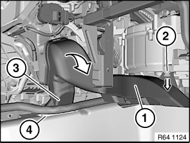
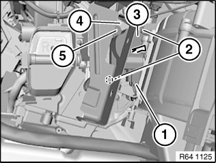

64 11 855 Removing and Installing/Replacing Servodrive For Central Kinematics
64 11 855 Removing And Installing / Replacing Actuator Drive For Central Kinematics (integrated Heating / Air-conditioning Regulation)

IMPORTANT:
Servomotors must be re-addressed in the event of replacement.
Addressing can only be carried out with the BMW diagnosis system.
Service functions:
- Body
- Heating and air conditioning function
- Flap motors
- Re-address flap motors

Necessary preliminary work:
- Remove right glove box with housing
- Remove storage compartment

Detach right footwell heating duct (1) in area (2) in direction of arrow.
Detach right footwell heating duct (1) with adapter (3) from heating and air-conditioning unit and remove in direction of arrow from right rear passenger compartment heating duct (4).

Unfasten plug connection (1) and disconnect.
Unfasten screws (2).
Detach actuator drive for central kinematics (3) in direction of arrow from heating and air-conditioning unit (4).
Installation note:
Place actuator drive for central kinematics (3) over guide pin (5).